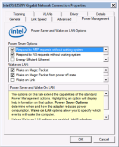
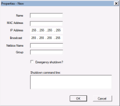
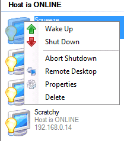

Getting Started
Terminology
- Host - a computer, workstation, or server
that you are going to control with WOL
- SDB, Subnet Directed Broadcast - A type of
packet that is sent across a router to a specific subnet.
- WMI, Windows Management Instrumentation - .
An API built into Windows.
- Magic Packet - The Magic Packet is a
broadcast frame that is usually sent as a UDP datagram on port
9, in the Data-Link layer. There is no direct confirmation
that the packet was received (though there are troubleshooting
tools built into WOL).
How WOL works
Wake-on-LAN uses a special packet called a "magic packet", which
is broadcast to the network to wakeup hosts. Because WOL
operates on the Data-Link layer, IP addresses and DNS addresses are
meaningless to the WOL process (though they are used for status
checks and shutdown). The host computers may be powered-down
or turned off, but are still listening for broadcast packets while
in low-power mode. This happens locally on the network
interface card. When the card hears it's specific "magic
packet", it signals the motherboard to wake-up, just like it would
if you pressed the power button.
System Requirements
- AquilaWOL runs on Windows XP, Vista, Windows 7, Windows 8,
Server 2003, Server 2008
- Microsoft
.NET 4.0
- Computers with network cards that support Wake on Magic
Packet
Running the software
Here are some steps to get up and running quickly.
- Verify that the host(s) you want to control support WOL.
- Using Control Panel, configure the network interface card
and enable "Wake on Magic Packet".
- Start the WOL program. By default, it is accessed from
Start -> Aquila Technology -> WakeOnLAN.
- Add a host to the WOL program. Click on File -> New
Host.
- Fill in some basic information about the host.
- Name: This is the name you use to
describe the host. It can be anything you want.
- MAC Address: Must be the MAC of the
network card that is enabled for WOL.
- IP Address: If you are using static
addressing, enter the IP address here. If you are
using DHCP, leave this field blank.
- Broadcast: This is the directed-subnet broadcast address
that WOL will send the packet to. For now, leave this
at the default of 255.255.255.255.
- Netbios name: This is the Windows Netbios name of the
host, or the FQDN of the host.
- Group: This is an option group that you put the host
into, for example: "Servers". Leave it blank for now.
- Emergency shutdown: If this box is checked, then this
host will be shutdown when you click the "Emergency
shutdown" button.
- Shutdown command line: Windows hosts can be shutdown
directly, but other operating systems, such as Linux,
require you to enter a command here to shut them down.
I usually use a putty command to do this.
- Press OK to save your changes.
|

 |
The main window should now display your new host and start
pinging it to see if it is available.
Right-click the host and you will see some options:
-
Wake
Up: This will send a WOL command to turn on the host.
- Shut Down: This will use Netbios to
shutdown the host, or the "shutdown command" if specified.
- Abort Shutdown: If you have selected a
shutdown with a warning message, and the time hasn't expired,
you may cancel the shutdown.
- Remote Desktop: Select this to open a
Windows Remote Desktop connection to the host.
- Properties: Used to change the settings for
this host.
- Delete: Remove this host from the database.
|
 |
<- Prev (Home)
Next (FAQ) -->

{kind=link}
{kind=link}